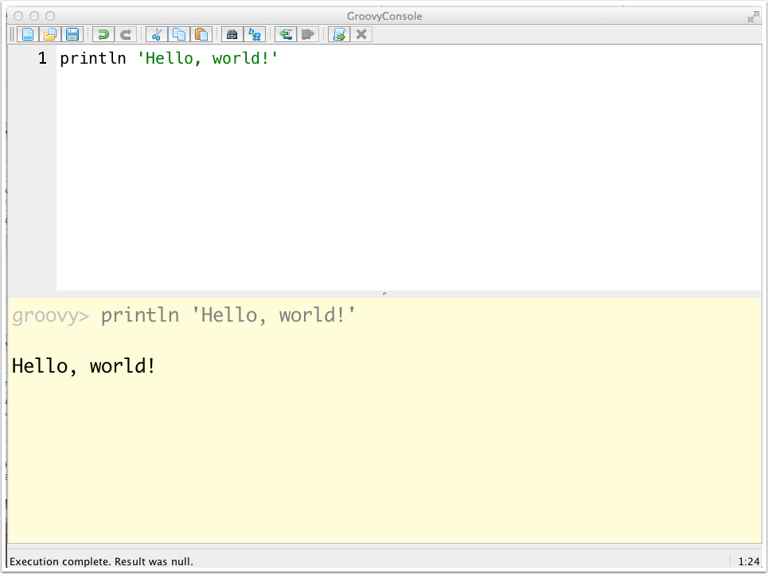

Groovy
Introduction
Groovy is one of the family of languages that compile to bytecodes that run on the Java virtual machine.
- Groovy
-
Most mature and easiest for Java developers to learn
- Scala
-
Statically typed with immutables; a good transitional language from OOP to functional programming
- Clojure
-
Lisp on the JVM; pure functional language with immutables
- Kotlin
-
Statically typed, null safe, nice blend of features from other languages; popular in Android world
- JRuby
-
Compiles Ruby
- Jython
-
Compiles Python
Installing Groovy
The home page for Groovy is https://groovy-lang.org.
There are multiple options for installing Groovy.
-
Zip download
-
Windows installer
-
Platform-specific installer (i.e., Homebrew or Macports on OS X)
In each case, all you need to do is:
-
Unzip the distribution to a common location
-
Set a
GROOVY_HOMEenvironment variable to that folder -
Add
$GROOVY_HOME/bin(or%GROOVY_HOME%\binon Windows) to your PATH
These all assume that you have a JAVA_HOME environment variable set to the full JDK distribution (not just a JRE).
To find out what version of Groovy you are currently using, use the groovy command with the -v flag.
> sdk use groovy 2.5.5 > groovy -v Groovy Version: 2.5.5 JVM: 1.8.0 Vendor: Oracle Corporation OS: Mac OS X
If you are using Java 8 (JDK 1.8), you need Groovy 2.3+. All versions of Groovy support Java 6 and 7. Groovy 3.0 will require Java 8 and will include support for all the Java syntax, including lambda expressions and method references.
Hello, World
The "Hello, World" program in Java is quite verbose, involving multiple object-oriented concepts.
public class HelloWorld {
public static void main(String[] args) {
System.out.println("Hello, World!");
}
}To understand this, a Java developer has to know:
-
public (and other access modifiers)
-
what a class is
-
what a method is
-
what the
mainmethod means in Java -
the dot notation for accessing attributes and methods
-
what an array of
Stringreferences means -
the braces notation for delimiting code
-
what a static method is
Developers from a Java background know all this intuitively, but there is a significant learning curve involved for non-Java people.
Here is the "Hello, World" program in Groovy:
println 'Hello, World!'Later sections will discuss this in more detail.
Some Groovy features:
-
Semicolons are optional
Semicolons work if you add them, and are necessary if you have more than one statement on a single line, but are generally not needed.
-
Parentheses are optional until they’re not
That sounds silly, but it’s true. If the compiler can guess correctly where the parentheses would have gone, you can leave them out. Otherwise, add them in. Groovy’s goal is not to make the shortest code possible — it’s to make the simplest code possible that’s still understandable.
-
Groovy is optionally typed.
If you declare a variable with a type, it works. If you don’t know or don’t care, you can use the
defkeyword discussed in a later section.
Running Groovy
The groovyc and groovy commands
In Java, you compile with the javac command and run with the java command.
> javac HelloWorld.java // creates HelloWorld.class
> java HelloWorld Hello, World!
Groovy has groovyc for compiling and groovy for execution, but you can actually execute the source code.
println 'Hello, World!'Use the groovy command to run the source:
> groovy hello_world.groovy Hello, World!
The source is actually compiled, but the compiled version is not kept. That’s interesting, but not very common.
In practice, Groovy code is compiled, especially as part of a larger project.
> groovyc hello_world.groovy // creates hello_world.class
> groovy hello_world Hello, World!
| The Groovy compiler knows how to compile Java, too. |
Since the contents of hello_world.groovy are not a class, the file is called a script. Groovy developers often use lowercase with underscores for script filenames. This makes it easy to see which files in a project are scripts and which are classes.
One little-used option is the -e flag on the groovy command, which executes the next argument as a complete script.
> groovy -e 'println InetAddress.localHost' // prints name and IP address of host system
The Groovy Shell
Groovy includes an interactive REPL (Read-Eval-Print-Loop) called groovysh. It provides tab completion, history, and line-by-line execution.
> groovysh
Groovy Shell (2.5.9, JVM: 11.0.5)
Type ':help' or ':h' for help.
-------------------------------------------------
groovy:000> 1 + 1
===> 2
groovy:000> println 'Hello, World!'
Hello, World!
===> null
groovy:000> void sayHello(String name) {
groovy:001> println "Hello, $name!"
groovy:002> }
===> true
groovy:000> sayHello('Dolly')
Hello, Dolly!
===> null
Type :help or :h to see all available commands. Exit the Groovy shell using the :exit, :quit, :x, or :q commands.
The Groovy Console
The Groovy Console is a graphical user interface that allows you to execute Groovy code quickly and easily.
The groovyConsole command starts up the console.

Enter code in the top region and execute it by typing Ctrl-Enter or Ctrl-R on Windows or Cmd-Enter or Cmd-R on a Mac. There is also an Execute Groovy Script icon second from the end on the right.
The Groovy console is great for testing ideas when you don’t want to start up a full-scale IDE.
Numbers
Groovy uses the same numeric types as Java, but there are no primitives in Groovy. Instead, Groovy uses the wrapper classes (like Integer, Double, and Boolean) for any primitive values.
The default type for a non-floating point literal is Integer or longer:
assert 3.getClass() == java.lang.Integer
assert 33333333333333.getClass() == java.lang.Long
assert 33333333333333333333333.getClass() == java.math.BigIntegerGroovy uses BigDecimal for all floating-point literals and arithmetic calculations
(2.5).getClass() == java.math.BigDecimal
(2/3).getClass() == java.math.BigDecimalUnlike Java, division is done at BigDecimal levels even if both arguments are integers. If you want integer division, use the intdiv method in java.lang.Number.
assert, imports, and def
assert
Java has an assert keyword that is rarely used and turned off by default.
Groovy uses a "power assert" that returns a lot of information when it fails.
int x = 3
int y = 4
assert 7 == x + y // true, so returns nothing
assert 7 == x + y + 1
Assertion failed:
assert 7 == x + y + 1
| | | | |
| 3 7 4 8
false
assert 7 == x + 2 * y / (3**x - y) + 1
Assertion failed:
assert 7 == x + 2 * y / (3 ** x - y) + 1
| | | | | | | | | | |
| 3 | 8 4 | 27 3 | 4 4.3478260870
false| | 23
| 0.3478260870
3.3478260870All that extra debugging information means most Groovy developers use assert in all their tests
Automatic imports
In Java, if you don’t add any import statements you get java.lang.* automatically.
In Groovy, if you don’t add any import statements, you get:
-
java.lang.* -
java.util.* -
java.net.* -
java.io.* -
java.math.BigInteger -
java.math.BigDecimal -
groovy.lang.* -
groovy.util.*
Groovy classes therefore have far fewer import statements than Java classes.
The def keyword
Groovy is optionally typed. If you declare a variable to be of type String, or Date, or Employee, then that’s all that can be assigned to them.
Integer x = 1
x = 'abc' // throws ClassCastExceptionThe def keyword tells the compiler we are not declaring a type, which will be determined at runtime.
def x = 1
assert x.getClass() == java.lang.Integer
x = new Date()
assert x.getClass() == java.util.Date
x = 'abc'
assert x.getClass() == java.lang.StringIn Grails, properties in domain classes — which are mapped to database tables — require actual data types. The def keyword is often used as the return type on controller methods, however.
Strings and Groovy Strings
Groovy has two types of strings, single- and double-quoted.
Single-quoted strings are instances of java.lang.String.
Double-quoted strings are Groovy strings and allow interpolation:
def s = 'this is a string'
assert s.getClass() == java.lang.String
s = "this uses double-quotes but is still a String"
assert s.getClass() == java.lang.String
s = "this string uses interpolation: ${1 + 1}"
assert s == 'this string uses interpolation: 2'
assert s instanceof GStringThe ${…} notation inside a double-quoted string evaluates its contents as a Groovy expression and invokes toString on the result.
If you are evaluating a variable only, you can leave out the braces.
String first = 'Graeme'
String last = 'Rocher'
assert "$first $last" == 'Graeme Rocher'Groovy also supports multiline strings. Three single quotes are regular multiline strings.
def picard = '''
Oh the vaccuum outside is endless
Unforgiving, cold, and friendless
But still we must boldly go
Make it so, make it so, make it so!
'''This string has five lines, because the first line starts with a carriage return.
Three double-quotes are multiline Groovy strings.
def saying = """
There are ${Integer.toBinaryString(2)} kinds of people in the world
Those who know binary, and those who don't
"""Multiline strings are helpful in many situations, but they are particularly useful when executing SQL statements.
Finally, Groovy supports what are called slashy strings, which are delimited by forward slashes.
def zip = /\d{5}(-\d{4})?/
assert '12345' ==~ zip
assert '12345-1234' ==~ zip
assert '12345 12345-1234 1234'.findAll(zip) ==
['12345', '12345-1234']Slashy strings do not require you to use double backslashes inside regular expressions. Here the \d pattern represents a decimal digit. The pattern \W means any non-word character (i.e., other than [a-zA-Z0-9_]).
def testString = 'Flee to me, remote elf!'.toLowerCase().replaceAll(/\W/,'')
assert testString == 'fleetomeremoteelf'
assert testString == testString.reverse() // test string is a palindromeThe ==~ operator checks for an exact match and returns the boolean true or false. The =~ operator returns an instance of java.util.regex.Matcher.
Using a tilde on a slashy string turns it into an instance of java.util.regex.Pattern, as in
assert ~/abcd/ instanceof java.util.regex.PatternA more detailed discussion of regular expressions in Groovy can be found at https://docs.groovy-lang.org/latest/html/documentation/#_regular_expression_operators.
Operator Overloading
In Java, the only overloaded operator is +, which means addition for numerical values and concatenation for strings.
In Groovy, all operators invoke methods. The complete list of operators is given on https://docs.groovy-lang.org/latest/html/documentation/#Operator-Overloading. Here is an abbreviated version.
| Operator | Method |
|---|---|
|
|
|
|
|
|
|
|
|
|
|
|
|
|
|
|
|
|
|
|
|
|
While overloading operators in regular Groovy programs is not that common, it’s used throughout the standard libraries.
For example, the java.lang.Number class is the superclass of all the wrapper classes as well as java.math.BigInteger and java.math.BigDecimal. The Groovy JDK adds plus, minus, and others to Number, which allows the operators to be used with all of its subclasses.
POJOs vs POGOs
In Java, a Plain Old Java Object (POJO) is a class with attributes that normally have getters and setters.
Here is a typical Java example.
import java.util.Date;
public class JavaTask {
private String name;
private int priority;
private Date startDate;
private Date endDate;
private boolean completed;
public JavaTask() {
// default constructor
}
public JavaTask(String name, int priority, Date start, Date end, boolean completed) {
this.name = name;
this.priority = priority;
this.startDate = start;
this.endDate = end;
this.completed = completed;
}
public void setName(String name) {
this.name = name;
}
public String getName() {
return name;
}
public void setPriority(int priority) {
this.priority = priority;
}
public int getPriority() {
return priority;
}
public void setStartDate(Date start) {
this.startDate = start;
}
public Date getStartDate() {
return startDate;
} public void setEndDate(Date end) {
this.endDate = end;
}
public Date getEndDate() {
return endDate;
}
public void setCompleted(boolean completed) {
this.completed = completed;
}
public boolean isCompleted() {
return completed;
}
@Override
public String toString() {
return "JavaTask{" +
"name='" + name + '\'' +
", priority=" + priority +
", startDate=" + startDate +
", endDate=" + endDate +
", completed=" + completed +
'}';
}
@Override
public boolean equals(Object o) {
if (this == o) return true;
if (o == null || getClass() != o.getClass()) return false;
JavaTask javaTask = (JavaTask) o;
if (completed != javaTask.completed) return false;
if (priority != javaTask.priority) return false;
if (endDate != null ? !endDate.equals(javaTask.endDate) : javaTask.endDate != null) return false;
if (name != null ? !name.equals(javaTask.name) : javaTask.name != null) return false;
if (startDate != null ? !startDate.equals(javaTask.startDate) : javaTask.startDate != null) return false;
return true;
}
@Override
public int hashCode() {
int result = name != null ? name.hashCode() : 0;
result = 31 * result + priority;
result = 31 * result + (startDate != null ? startDate.hashCode() : 0);
result = 31 * result + (endDate != null ? endDate.hashCode() : 0);
result = 31 * result + (completed ? 1 : 0);
return result;
}
}The comparable Groovy POGO is shown next.
import groovy.transform.Canonical
@Canonical (1)
class GroovyTask {
String name
int priority
Date startDate
Date endDate
boolean completed
}| 1 | AST transformation, discussed later |
Why is the POGO so much shorter?
In Java, if you don’t add an access modifier (public, private, or protected), you get "package private", which means other classes in the same package can access it.
In Groovy, if you don’t add an access modifier:
-
Attributes are private by default
-
Methods are public by default
-
Classes are public by default
In Java, if you don’t add any constructors, the compiler adds a default, no-arg, constructor that does nothing
In Groovy, if you don’t add any constructors, you get both a default and a "map-based" constructor that uses the attributes as keys, so the need for overloaded constructors goes away.
Task t1 = new Task()
Task t2 = new Task(name:'t2', priority:3)
Task t3 = new Task(name:'t3', startDate: new Date(), endDate: new Date(), completed: true)In Java, getters and setters must be added explicitly.
In Groovy, getters and setters are generated for any attribute without an access modifier.
-
Attributes marked
finalwill only have getters and not setters -
Attributes marked
privateorpublicwill generate neither getters nor setters
That brings up a very common Groovy idiom:
| When you access a property in a POGO, Groovy automatically invokes the getter or setter |
For example, consider the following code:
Task t = new Task()
t.name = 't0' (1)
t.setPriority(3) (2)
assert t.name == 't0' (3)
assert t.getPriority() == 3 (4)| 1 | Uses generated setName method |
| 2 | Uses generated setPriority method |
| 3 | Uses generated getName method |
| 4 | Uses generated getPriority method |
What about the @Canonical annotation? That’s the subject of the next section.
AST Transformations
Groovy uses annotations to trigger Abstract Syntax Tree (AST) transformations.
The compiler reads the source file and creates an abstract syntax tree. Then the annotation causes it to modify the tree before finishing the compilation process. AST transformations are thus compile-time metaprogramming.
Consider a Person class with firstName and lastName properties
toString methodpackage entities
class Person {
String firstName
String lastName
}
Person p = new Person(firstName: 'Guillaume', lastName: 'Laforge')
println pThe result will be something like entities.Person@7996eb1d (the hex address after the @ sign will differ)
Adding an override of the toString method works just as it does in Java:
toString methodpackage entities
class Person {
String firstName
String lastName
String toString() { "$firstName $lastName" }
}
Person p = new Person(firstName: 'Guillaume', lastName: 'Laforge')
assert p.toString() == 'Guillaume Laforge'The @ToString transformation
The annotation groovy.transform.ToString triggers an AST transformation that generates a toString method.
@ToString AST transformationpackage entities
import groovy.transform.*
@ToString
class Person {
String firstName
String lastName
String toString() { "$firstName $lastName" }
}
Person p = new Person(firstName: 'Guillaume', lastName: 'Laforge')
assert p.toString() == 'Guillaume Laforge'The AST transformation did nothing in this case, because the source already had a toString method.
That’s a good general rule:
| Groovy will not replace an existing method |
If you don’t like what Groovy is generating, add your own implementation. Groovy will not change it.
To see the effect of the @ToString transformation, remove the existing toString method
@ToString AST transformationpackage entities
import groovy.transform.*
@ToString
class Person {
String firstName
String lastName
}
Person p = new Person(firstName: 'Guillaume', lastName: 'Laforge')
assert p.toString() == 'entities.Person(Guillaume, Laforge)'The generated toString method gives the fully-qualified class name followed by the values of the attributes, in order from top down in the class.
If you check the GroovyDocs for groovy.transform.ToString, you’ll find that it takes an optional property called includeNames.
@ToString with includeNamespackage entities
import groovy.transform.*
@ToString(includeNames = true)
class Person {
String firstName
String lastName
}
Person p = new Person(firstName: 'Guillaume', lastName: 'Laforge')
assert p.toString() == 'entities.Person(firstName: Guillaume, lastName: Laforge)'Many AST transformations have optional properties. Check the documentation of the associated annotations for details.
The @EqualsAndHashCode transformation
Another transform is provided by @EqualsAndHashCode
@EqualsAndHashcodepackage entities
import groovy.transform.*
@ToString(includeNames = true)
@EqualsAndHashCode
class Person {
String firstName
String lastName
}
Person p1 = new Person(firstName: 'Guillaume', lastName: 'Laforge')
Person p2 = new Person(firstName: 'Guillaume', lastName: 'Laforge')
assert p1 == p2
assert p1.hashCode() == p2.hashCode()The transformation generates an equals method and a hashCode method by the prescription laid down by Joshua Bloch in his Effective Java book. The same methods are also generated by most IDEs, including Eclipse and IntelliJ IDEA.
You can customize the generated methods using the includes or excludes optional properties. See the docs for details.
The @TupleConstructor transformation
The @TupleConstructor transformation adds a constructor to the class that takes each attribute in order from top down.
@TupleConstructorpackage entities
import groovy.transform.*
@ToString(includeNames = true)
@EqualsAndHashCode
@TupleConstructor
class Person {
String firstName
String lastName
}
Person p1 = new Person(firstName: 'Guillaume', lastName: 'Laforge')
Person p2 = new Person(firstName: 'Guillaume', lastName: 'Laforge')
Person p3 = new Person('Guillaume', 'Laforge') (1)
assert p1 == p3| 1 | Generated constructor |
In additional to optional properties like includes and excludes, this transform also allows includeFields, callSuper, and more. See the docs for details.
The @Canonical transformation
The combination of @ToString, @EqualsAndHashCode, and @TupleConstructor is so popular that it has a shortcut.
The @Canonical transformation is equivalent to all three.
@Canonical transformationpackage entities
import groovy.transform.*
@Canonical
class Person {
String firstName
String lastName
}
Person p1 = new Person(firstName: 'Guillaume', lastName: 'Laforge')
Person p2 = new Person(firstName: 'Guillaume', lastName: 'Laforge')
Person p3 = new Person('Guillaume', 'Laforge')
assert p1.toString() == 'entities.Person(Guillaume, Laforge)'
assert p1 == p3The sparseness of the code is remarkable. In five lines, this code has:
-
private attributes
-
public getter and setter methods
-
default constructor
-
tuple constructor
-
map-based constructor
-
a
toStringoverride -
an
equalsoverride -
a
hashCodeoverride
That’s a lot of power for very little code.
There are many other AST transformations in the Groovy standard library. They include @TypeChecked and @CompileStatic for type safety, @Sortable to automatically implement sorting, @Immutable for generating unmodifiable objects, and @Delegate for implementing composition.
Collections
Lists
Groovy has native support for collections. To create a list of strings in Java, you would need to write code like:
import java.util.*
List<String> strings = new ArrayList<>();
strings.add("This"); strings.add("is");
strings.add("a"); strings.add("list");
strings.add("of"); strings.add("strings");In Groovy, square brackets ([]) represent a list, whose default implementation is a java.util.ArrayList. Therefore the Groovy equivalent is:
def strings = ['This', 'is', 'a', 'list', 'of', 'strings']
assert strings.class == ArrayListChanging the implementation type can be done in two ways. One is to use the as operator.
def strings = ['This', 'is', 'a', 'list', 'of', 'strings'] as LinkedList
assert strings.class == LinkedListThe as operator invokes the asType method.
Alternatively, you can replace the def declaration with the desired type.
LinkedList strings = ['This', 'is', 'a', 'list', 'of', 'strings']
assert strings.class == LinkedListGroovy will then do the type conversion for you.
| Groovy will try to convert any expression to the declared variable type. |
This capability is powerful. For example, the split() method returns String[], an array of strings. Converting that into a List is an annoying bit of code, which can be completely eliminated in Groovy.
String[] into a CollectionCollection strings = 'this is a list of strings'.split()
assert strings == ['this', 'is', 'a', 'list', 'of', 'strings']
assert strings.class == ArrayListSets
In Java, a set is a linear collection that is not ordered and does not hold duplicates.
Setdef nums = [3, 1, 4, 1, 5, 9, 2, 6, 5] as Set
assert nums == [3, 1, 4, 5, 9, 2, 6] as Set
assert nums.class == LinkedHashSetThe order here is predictable because the elements are simple integers. Normally the results would not be in insertion order. The duplicates, however, have been eliminated.
The java.util.SortedSet interface sorts elements on insertion.
SortedSetdef nums = [3, 1, 4, 1, 5, 9, 2, 6, 5] as SortedSet
assert nums == [1, 2, 3, 4, 5, 6, 9] as SortedSet
assert nums.class == TreeSetDuplicates are determined using the equals and hashCode methods. As shown in a previous section, there is an AST transformation called @EqualsAndHashCode available, or you can use the @Canonical annotation which includes it.
import groovy.transform.*
@Canonical
class Person {
String first
String last
}
Person p1 = new Person(first: 'Graeme', last: 'Rocher')
Person p2 = new Person(first: 'Graeme', last: 'Rocher')
Person p3 = new Person('Graeme', 'Rocher')
Set people = [p1, p2, p3]
assert people.size() == 1Collections have a size method, but Groovy makes that more general.
Groovy adds a size method to arrays, strings, collections, node lists, and more.
|
Maps
The native syntax for maps also uses square brackets, but separates keys from values using a colon in each entry.
def map = [a:1, b:2, c:2]
println map // [a:1, b:2, c:2]
println map.keySet() // [a, b, c]
println map.values() // [1, 2, 2]The keys are assumed to be strings, unless they’re numbers.
Groovy overloads the dot operator to be put or get, and the putAt and getAt methods are also available. Therefore you can write:
def map = [a:1, b:2, c:2]
map.d = 1 // overloaded dot
map['e'] = 3 // putAt method
map.put('f', 2) // Java still works
println map // [a:1, b:2, c:3, d:1, e:3, f:2]Because the dot operator has already been overloaded in the class, you can’t rely on it to convert properties to getter methods.
def map = [a:1, b:2, c:2]
println map.class.name // throws NullPointerException (1)
assert map.getClass().name == LinkedHashMap| 1 | First dot looks for a String key called class and returns null |
Groovy’s native syntax for lists, sets, and maps makes coding with those data structures easy. The subject of the next section, closures, shows how to process them.
Closures
A closure is a block of code including the referencing environment (see https://en.wikipedia.org/wiki/Closure_(computer_programming) for a formal definition). While the details of closures can get complex, Groovy makes them simple for the vast majority of cases.
Iterating with loops
Consider iterating over a list.
def nums = [3, 1, 4, 1, 5, 9]The standard Java loop works in Groovy.
for (int i = 0; i < nums.length; i++) {
println nums[i]
}The so-called "for-each" loop introduced in Java 1.5 also works.
for (int n : nums) {
println n
}You lose the index, but that’s often not a major issue.
Groovy has a similar loop, called a "for-in" loop.
for (n in nums) {
println n
}Processing Lists with Closures
All of these work, but none are the most common way to loop over a collection in Groovy. The most common technique is to use the each method, which takes an instance of groovy.lang.Closure as an argument.
each with a closurenums.each { n -> println n }The closure is the code inside the braces, { … }. Think of it as the body of a function without a name. The arrow symbol is used to separate the parameters to the function from the function body, which can be written over several lines.
nums.each { n ->
println """
The 'each' method on a collection
passes each element to a one-argument closure.
Here the argument is called 'n' and its value is ${n}.
"""
}This is a highly contrived, not to mention verbose, example, but it works.
If you do not use the arrow symbol, the default dummy name for one-argument closures is called it.
nums.each { println it }
Groovy closures are assumed to take one argument by default. The default name of that argument is it
|
The each method is defined to take a one-argument closure. The eachWithIndex method takes a two-argument closure.
eachWithIndex method takes a 2-arg closurenums.eachWithIndex { val, idx ->
println "nums[$idx] == $val"
}There are no default argument names for a multi-argument closure, so you must use an arrow to define them.
Groovy closures can access variables defined outside them. For example, here’s way to sum the numbers (though admittedly not a good way):
int total = 0
nums.each {
total += it
}
println "Total = $total"
The Groovy JDK defines a sum method in java.lang.Iterable.
|
Though Groovy is not a functional language, it does define some functional capabilities. For example, the collect method transforms a collection into a new one by applying a closure to each element.
collectdef doubles = nums.collect { it * 2 }
assert doubles == [6, 2, 8, 2, 10, 18]Groovy also defines a findAll method that returns all elements that satisfy a closure.
findAll to filter elementsassert [3, 9] == nums.findAll { it % 3 == 0 }The spread-dot operator
There is a short-cut for collect if you only need to invoke a method on each element.
def strings = ['this', 'is', 'a', 'list', 'of', 'strings']
assert strings.size() == 6 // apply size() to the list
assert strings*.size() == [4, 2, 1, 4, 2, 7] // apply size() to each elementAnything you can do with the spread-dot operator you can do with collect, but it can be a convenient short-cut.
Maps and closures
Consider a map of keys and values.
def map = [a:1, b:2, c:2]
The each method is defined on maps to take a closure, but the closure can take either one or two arguments.
If the closure takes one argument, it is an instance of the Map.Entry class, which has getKey and getValue methods.
map.each {
println "map[${it.key}] == ${it.value}"
}Here accessing the key or value properties invokes the getter methods by the usual Groovy idiom.
If you use a two-argument closure, Groovy splits the keys and values for you.
map.each { k,v ->
println "map[$k] == $v"
}The names of the dummy variables (k and v) are arbitrary.
All of the map methods are overloaded in this manner. For example, the following transforms a map of keys and values into a list where the keys equal the values.
assert map.collect { k,v -> "$k=$v" } == ['a=1', 'b=2', 'c=2']Since the Groovy JDK adds a join method to Collection that takes a delimiter, here is an easy way to convert a map of parameters and values into a query string for a RESTful web service.
assert map.collect { k,v -> "$k=$v" }.join('&') == 'a=1&b=2&c=2'That construct frequently comes in handy.
More on closures (optional)
All the closures considered so far were arguments to pre-defined methods. You can define your own closures and invoke them, however.
Here is a closure representing an add method.
def add = { x,y -> x + y }The add variable is defined with the def keyword, but Closure would also be acceptable.
The closure takes two (untyped) arguments, x and y, and returns their sum. The return keyword is optional, because the last evaluated expression is returned automatically.
You invoke the closure by using its call method, or by simply providing the arguments in parentheses.
add closureassert add.call(3,4) == 7
assert add(3,4) == 7
assert add('abc','def') == 'abcdef'
assert add([3, 1, 4, 1, 5], [9, 2, 6, 5]) == [3, 1, 4, 1, 5, 9, 2, 6, 5]In each case the closure invokes the plus method on x with argument y. If you check the Groovy JDK docs, you’ll find that the plus method on a list takes another list and performs a union with it.
Once again, if the last argument to a method is a closure, you can place the closure after the parentheses.
downto method on Number10.downto(7) { println it } // most common Groovy idiom
10.downto 7, { println it } // works, but rare
10.downto(7, { println it }) // Java developer who only recently learned GroovyIn Grails, closures are used to initialize data, to enforce constraints, to customize mappings, and much more. Internally they are used to do some serious metaprogramming, but that’s beyond the scope of this course.
Miscellaneous operators
Safe navigation
Use ?. to safely navigate associations.
class Department {
Manager boss
}
class Manager {
String name
}
def d = new Department(boss: new Manager(name: 'Mr Burns'))
assert d.boss.name == 'Mr Burns'
d = new Department()
assert d?.boss?.name == nullThe expression d?.boss?.name asks if d is not null, which if true then evaluates getBoss(). Then it checks whether that result is not null, whereupon it calls getName().
If either are null, it returns null.
Spaceship
Groovy has a spaceship operator, <=>.
assert 2 <=> 4 == -1
assert 4 <=> 4 == 0
assert 6 <=> 4 == 1The operator uses the compareTo method to evaluate the expression and returns -1 if the left-side is less than the right, 0 if they are equals, and +1 if the left-side is greater than the right.
The Groovy Truth
In Java, only boolean expressions can evaluate to true or false. Groovy generalizes this considerably.
In Groovy, all the following are true:
-
Non-zero numbers
-
Non-null references
-
Non-empty strings
-
Non-empty collections
-
Regular expressions with a match
-
Boolean
true
This makes it much easier to get into trouble, of course, so test cases become more important than ever.
Elvis
Consider the ternary (three argument) operator in Java:
String name
String n = (name != null && name.size() > 0 ? name : 'World')
assert "Hello, $n!" == 'Hello, World!'Because of the Groovy truth, if name is null or empty, it evaluates to false, so this can be simplified.
String name
String n = name ? name : 'World'
assert "Hello, $n!" == 'Hello, World!'The question then becomes, why use name twice? What if we could just say, if name is not null and not empty (i.e. true by the Groovy truth) use it, otherwise use a default?
So remove the second instance of the variable:
String name
String n = name ?: 'World'
assert "Hello, $n!" == 'Hello, World!'The expression ?: is known as the Elvis operator, because someone with a vivid imagination looked at it on its side and thought he or she saw Elvis.
Yes, it’s a reach, but a very useful operator.
Method References
Java 8 has a method reference operator which uses a double colon. For example, to refer to the random method in the Math class, you can write:
Stream.generate(Math::random)
.limit(100)
.forEach(System.out::println)That will generate the first 100 random numbers (between 0 and 1) and print them. The method reference syntax is used both in Math::random and in System.out::println. Each refers the the method and supplies it as a lambda to the method. The forEach method, for example, takes a Consumer as an argument, which is one of the so-called functional interfaces defined in the API.
Groovy doesn’t use the same syntax, but it has a similar technique. Groovy uses the & operator to convert a method into a closure.
def visit(List elements, Closure closure) {
elements.collect { closure(it) }
}Here, the visit method takes a collection and a closure as arguments. The implementation of visit is to apply the closure to each element of the collection and return the transformed values. The idea is to provide a method that can traverse the collection, while letting the client specify what to do with each element.
One way to invoke the method is to use an explicit closure.
List strings = 'this is a list of strings'.split()
visit(strings) { println it }This uses the standard Groovy idiom where, since the last argument is a closure, it’s placed after the parentheses. The result is that the visit method prints each element.
Here’s another example. Say you want the total length of all the strings. Then you can use this closure:
int total = 0
visit(strings) { total += it.size() }
println totalSay, however, that you want to use a method that already exists. You can use the method reference operator to convert the method into a closure and use then use it as the second argument.
def echo(obj) { println obj; obj }
visit(strings, this.&echo)The echo method simply prints its argument and then returns it.
The result is:
this is a list of strings Result: [this, is, a, list, of, strings]
As an aside, experienced developers will recognize that the visit method is essentially a limited form of the Vistor design pattern, which separates the way to traverse a set of elements from what you want to do with them. Here the traversal is pretty trivial, because we’re using a linear collection, but the same process would work for trees or other more complex data structures.
In languages like Groovy that support closures, many of the classic design patterns reduce to practially nothing.
Builders
A builder class in Groovy generates code based on pretended methods, i.e., methods that do not exist in the builder itself. Instead, when one of those methods is invoked, the call is intercepted and something is generated.
For example, the Groovy library includes a class called groovy.xml.MarkupBuilder. It allows you to write code like:
MarkupBuilder to generate XMLimport groovy.xml.MarkupBuilder
def builder = new MarkupBuilder()
builder.people {
person(id:1) {
name 'Buffy'
}
person(id:2) {
name 'Willow'
}
}Executing this code produces:
<people>
<person id='1'>
<name>Buffy</name>
</person>
<person id='2'>
<name>Willow</name>
</person>
</people>The "pretended" methods here are people, person, and name. None of them exist in the MarkupBuilder class. Instead, Groovy ultimately invokes a method called methodMissing. The author of the MarkupBuilder class implemented methodMissing to generate a DOM element based on the method name, and if you use the colon notation (as in id:1) it adds an attribute to the element. Then if you use a closure it moves to child elements, and if you simply add a string argument (as in name 'Buffy') that becomes the text data within the element.
All that work allows you to script your XML in Groovy.
By default, MarkupBuilder writes to standard output. If you give the constructor an argument of type Writer, you can send the output to a file or other stream.
StringWriterimport groovy.xml.MarkupBuilder
StringWriter sw = new StringWriter()
def builder = new MarkupBuilder(sw)
builder.people {
person(id:1) {
name 'Buffy'
}
person(id:2) {
name 'Willow'
}
}
println sw.toString()Other builders in the Groovy library include an AntBuilder, a JsonBuilder, and a SwingBuilder.
Groovy and XML
Nothing demonstrates the gap between Java and Groovy better than XML.
Parsing XML
Consider the following XML document.
<people>
<person id="1">
<name>Buffy</name>
</person>
<person id="2">
<name>Willow</name>
</person>
</peopleSay you want to parse this document and get the name of the second person. One Java solution is provided here.
import org.w3c.dom.Document;
import org.w3c.dom.Node;
import org.w3c.dom.NodeList;
import org.xml.sax.SAXException;
import javax.xml.parsers.DocumentBuilder;
import javax.xml.parsers.DocumentBuilderFactory;
import javax.xml.parsers.ParserConfigurationException;
import java.io.File;
import java.io.IOException;
public class ParsePerson {
public static void main(String[] args) {
DocumentBuilderFactory factory = DocumentBuilderFactory.newInstance();
try {
DocumentBuilder builder = factory.newDocumentBuilder();
Document doc = builder.parse(new File("people.xml"));
NodeList names = doc.getElementsByTagName("name");
Node secondNameNode = names.item(1);
String secondName = secondNameNode.getFirstChild().getNodeValue();
System.out.println("The second name is " + secondName);
} catch (SAXException | IOException | ParserConfigurationException e) {
e.printStackTrace();
}
}
}To parse the document, you need a parse method, which is an instance method of DocumentBuilder. You get a DocumentBuilder from a DocumentBuilderFactory, which has a factory method called newDocumentBuilder. To get the DocumentBuilderFactory, you need to use its factory method, newInstance.
Once you’ve done all that, you have a Document instance. To find the element in question, the available search methods are either getElementById (but there are no id’s) or getElementsByTagName. The latter returns a NodeList, which you can then use to get the Node you want.
Then, of course, you have to remember that the value of a Node is not the character data. The character data lives in the text node child of the node, so you need to use getFirstChild to get that child, and then, at long last, you can get the value by calling getNodeValue.
Here, on the other hand, is the Groovy solution:
def root = new XmlSlurper().parse('people.xml')
println "The second name is ${root.person[1].name}"The difference is almost unfair.
Generating XML
Generating XML using Java is too horrible to include here. Using Groovy is almost trivial. To do that, use a groovy.xml.MarkupBuilder.
def builder = new groovy.xml.MarkupBuilder()
builder.people {
person(id:1) {
name 'Buffy'
}
person(id:2) {
name 'Willow'
}
}The result is the XML data from above.
Builders work through Groovy metaprogramming. They intercept "missing" methods (like person and name) and, in this case, turn them into DOM elements. If the "pretended" method takes an argument with a colon, it becomes an attribute of that element. If it takes a regular argument, it becomes the character data. If there is a closure, it becomes a child element, and so on.
There are other "builder" classes in the standard library, like SwingBuilder and AntBuilder.
Groovy and JSON
Parsing JSON data
Groovy includes a JsonSlurper class that can parse JavaScript Object Notation (JSON) data.
Consider a file with two people in it, in JSON format.
[
{ "name": "Buffy", "role": "slayer" },
{ "name": "Willow", "role": "witch" }
]The JsonSlurper class has parse methods that take various sources, but to be different read in the data using the getText method in the File class, then parse it.
import groovy.json.*
String jsonTxt = new File('../people.json').text
def json = new JsonSlurper().parseText(jsonTxt)
assert json[1].role == 'witch'Generating JSON
Likewise, building JSON data involves a builder class. In this case, it’s groovy.json.JsonBuilder.
import groovy.json.*
def builder = new JsonBuilder()
builder([name:'Buffy', role:'slayer'], [name:'Willow', role:'witch'])
assert builder.toString() ==
'[{"name":"Buffy","role":"slayer"},{"name":"Willow","role":"witch"}]'The documentation of JsonBuilder is a bit thin. As with most open source projects, better documentation can be found in the test cases. If you look at the subprojects directory under the GitHub repository for Groovy (https://github.com/apache/groovy), you will find several subprojects, one of which is groovy-json. The JsonBuilderTest class can be found there, in the src/spec/test/json folder.
Runtime Metaprogramming
Expando
The groovy.util.Expando class has no methods and no attributes, but allows you to add both at runtime.
Expandodef e = new Expando()
e.name = 'Fluffy' (1)
e.speak = { -> "$name says meow"} (2)
assert 'Fluffy says meow' == e.speak()| 1 | Add the name attribute |
| 2 | Add a speak method |
You add attributes to an expando using the dot notation, as shown. You add methods by assigning a property to a closure. Groovy closures have one argument by default. Using the arrow here with nothing to the left of it means we’re defining a zero-argument closure, which means that the associated method takes no arguments.
Believe it or not, you can add overloaded methods by assigning the proper closure to the same name.
speak methoddef e = new Expando()
e.name = 'Fluffy'
e.speak = { -> "$name says meow"} (1)
e.speak = { String msg -> "$name says $msg" } (2)
assert 'Fluffy says meow' == e.speak()
assert 'Fluffy says purr' == e.speak("purr")| 1 | Defines speak with no arguments |
| 2 | Defines speak with one argument |
Note we have changed only the single expando instantiated here. If we made another expando, it would not have any of these properties or methods.
Expandos are useful primarly as mock objects for testing, because you can hardwire them to do whatever you like.
More importantly, though, is that we can also modify the class itself, using something called a metaclass.
Using the MetaClass
Every Groovy class implements the GroovyObject interface. One of its methods is invokeMethod, which is called whenever you call a method on an object. Another method is called getMetaClass, which returns the groovy.util.MetaClass instance associated with that object.
The basic idea is that whenever you call a method, Groovy first checks to see if that method exists in the bytecodes. If so, it calls it. If not, it winds up calling invokeMissingMethod on the metaclass.
The cool part is that the metaclass itself is an expando. In fact, the proper name for it is ExpandoMetaClass, or EMC.
Using this is much simpler than it sounds. Consider a class with no attributes and no methods, and modifying it through the metaclass.
Catclass Cat {} (1)
Cat.metaClass.name = 'Kitty'
Cat.metaClass.speak = { -> "$name says meow" }
Cat.metaClass.speak = { msg -> "$name says $msg" }
Cat c = new Cat() (2)
assert c.speak() == 'Kitty says meow'
assert c.speak('purr') == 'Kitty says purr'| 1 | The Cat class has no methods or attributes |
| 2 | Instantiate the modified class |
The class is modified through its EMC, adding attributes and methods the same way they were added to an expando. Now all instances of the Cat class have those attributes and methods.
This sort of runtime programming is easy and extremely useful in a variety of use cases. In fact, much of the Groovy JDK was created this way.
Additional AST transformations
@Delegate
The @Delegate annotation triggers an AST transformation that exposes all the public methods of a contained class through the container. For example:
@Delegate to expose contained methodsclass Phone {
String dial(String num) {
"Dialing $num..."
}
}
class Camera {
String takePicture() {
'Taking picture...'
}
}
class SmartPhone {
@Delegate Phone phone = new Phone()
@Delegate Camera camera = new Camera()
}
SmartPhone sp = new SmartPhone()
assert sp.dial('555-1234') == 'Dialing 555-1234...'
assert sp.takePicture() == 'Taking picture...'The public methods dial in Phone and takePicture in Camera are made available through the SmartPhone class. This means you can invoke either of them on an instance of SmartPhone and the calls will be transferred to the contained objects, then the return values will be sent to the caller.
This is composition, rather than inheritance. The SmartPhone is not a kind of Phone or Camera and can’t be assigned to a reference of either type. In fact, the user doesn’t know how the SmartPhone implements the methods at all.
One question that comes up is, what happens if both the delegates have a method in common? Consider the same example, but with a from property in each delegate representing the manufacturer:
class Phone {
String from
String dial(String num) {
"Dialing $num..."
}
}
class Camera {
String from
String takePicture() {
'Taking picture...'
}
}
class SmartPhone {
@Delegate Phone phone = new Phone(from: 'Samsung')
@Delegate Camera camera = new Camera(from: 'Nikon')
}
SmartPhone sp = new SmartPhone()
assert sp.dial('555-1234') == 'Dialing 555-1234...'
assert sp.takePicture() == 'Taking picture...'
// sp.from == ???By adding a from property to Phone and Camera, now each class has a public getFrom() and setFrom(String) method. The question is, which one does SmartPhone use?
The answer is, from in SmartPhone uses the version from Phone:
sp.from == 'Samsung'
The reason is that the Phone delegate comes first when reading the SmartPhone class from the top down. While transforming, Groovy adds the public methods from Phone to the SmartPhone class. Then it sees the Camera delegate, but the corresponding from methods aren’t missing any more.
This, however, gives a clue on how to resolve the issue in a practical way: add an explicit getFrom() method to SmartPhone:
// inside SmartPhone
String getFrom() {
"Phone: ${phone.from}, Camera: ${camera.from}"
}Now this version will be used because the getFrom method won’t be missing during the transformation phase.
A corresponding setFrom(String) method could also be added, or you can make the from properties final in both delegates.
@Immutable
Immutability is a key property of multi-threaded or multi-processor applications. If you remove "shared mutable state", concurrency becomes much more straightfoward.
Some languages, like Clojure, make everything immutable. Some, like Scala, have both mutable and immutable objects. Some, like Java, make immutability very hard to achieve.
To make a class produce only immutable objects, you have to:
-
Remove all the setter methods
-
Make all the attributes final, with getter methods as needed
-
Wrap any collections and maps with their unmodifiable counterparts
-
Make the class final (amazing how many people forget that)
-
Provide a constructor for supplying the attributes
-
Defensively copy any mutable components
Even that’s not enough. You could try to do all that, or you can use the @Immutable annotation from Groovy, which does all of that for you.
import groovy.transform.*
@Immutable
class Contract {
String company
String workerBee
BigDecimal amount
Date from, to
}
Date start = new Date()
Date end = start + 7 // Operator overloading
Contract c = new Contract(company: 'Your Company',
workerBee: 'Me', amount: 500000,
from: start, to: end)This Contract class has a default and tuple constructor, along with the normal map-based constructor. Dates and strings are defensively copied. The attributes are marked final, and any attempt to change them results in a ReadOnlyPropertyException. There are no getter methods.
// CIO: Whoa! That amount was a typo. I'll just fix it...
c.setAmount(5000) // throws MissingMethodException, making me happy
// Me: Um, but there's no way I'll be done in a week...
c.to = now + 50 // throws ReadOnlyPropertyException, making the CIO happyThe class also provides a toString, an equals, and a hashCode method. Again, all of that from about half a dozen lines of code.
@Sortable
The @Sortable AST transformation adds code to make the class implement Comparable based on its attributes. Here is a class to represent golfers:
import groovy.transform.*
@Sortable
class Golfer {
String first
String last
int score
String toString() { "$score: $last, $first" }
}Without the annotation, you’d have to write a sorting algorithm yourself. Wtih the annotation, the golfers are sorted by first name, then equal first names are sorted by last name, and equal first and last names are sorted by score.
def golfers = [
new Golfer(score: 68, last: 'Nicklaus', first: 'Jack'),
new Golfer(score: 70, last: 'Woods', first: 'Tiger'),
new Golfer(score: 70, last: 'Watson', first: 'Tom'),
new Golfer(score: 68, last: 'Webb', first: 'Ty'),
new Golfer(score: 70, last: 'Watson', first: 'Bubba')]
golfers.sort().each { println it }which yields:
70: Watson, Bubba 68: Nicklaus, Jack 70: Woods, Tiger 70: Watson, Tom 68: Webb, Ty
Of course, that’s not how you sort golfers. Fortunately, the annotation takes an includes argument which can list the proper ordering:
import groovy.transform.*
@Sortable(includes = ['score', 'last', 'first'])
class Golfer {
String first
String last
int score
String toString() { "$score: $last, $first" }
}Now the sorted list is:
68: Nicklaus, Jack 68: Webb, Ty 70: Watson, Bubba 70: Watson, Tom 70: Woods, Tiger
Much better. Note how Webb comes before both Watsons, because of his score, and Bubba comes before Tom because of his first name.
Fans of CaddyShack will recall however, that Ty Webb didn’t sort golfers that way.
- Judge Smails
-
Ty, what did you shoot today?
- Ty Webb
-
Oh, Judge, I don’t keep score.
- Judge Smails
-
Then how do you measure yourself with other golfers?
- Ty Webb
-
By height.
With that in mind, here’s the new class:
import groovy.transform.*
@Sortable(includes = ['height', 'score', 'last', 'first'])
class Golfer {
String first
String last
int score
int height
String toString() { "$score: $last, $first (${height.abs()})" }
}
def golfers = [
new Golfer(height: 70, score: 68, last: 'Nicklaus', first: 'Jack'),
new Golfer(height: 73, score: 70, last: 'Woods', first: 'Tiger'),
new Golfer(height: 69, score: 70, last: 'Watson', first: 'Tom'),
new Golfer(height: 76, score: 68, last: 'Webb', first: 'Ty'),
new Golfer(height: 75, score: 70, last: 'Watson', first: 'Bubba')]
golfers.sort().reverse().each { println it }The new result is now:
68: Webb, Ty (76) 70: Watson, Bubba (75) 70: Woods, Tiger (73) 68: Nicklaus, Jack (70) 70: Watson, Tom (69)
Note that since the default sort is ascending, you need to invoke the reverse method in order for Ty to win.
@TypeChecked
Here’s a quick example. In Groovy, generic types compile correctly, but are not enforced.
List<Integer> nums = [3, 1, 4, 1, 5, 9, 'abc']
nums << new Date()Despite the fact that the list has the generic type Integer, you can initialize it with a String and append a Date without a problem.
If this behavior is not acceptable, however, you can use the @TypeChecked annotation, which can be applied to a method or a class. Changing this sample to use a method and adding the annotation results in:
@groovy.transform.TypeChecked
List demo() {
List<Integer> nums = [3, 1, 4, 1, 5, 9, 'abc']
nums << new Date()
}
println demo()This results in exceptions in both the initialization and the append operation. In each case you get a [Static type checking] error.
Spock
Documentation
The Spock home page is http://spockframework.org.
That page primarily serves as a source of links to the actual distribution and documentation:
- Source code
- Discussion forum
-
https://groups.google.com/forum/#!forum/spockframework which is a Google Group email list
- Documentation
-
http://spockframework.org/spock/docs/1.3/index.html, which is somewhat incomplete but useful
The GitHub repository has a spock subproject which contains the actual source code, and a spock-example project which holds a simple demo.
The Spock project was originally managed by Peter Niederweiser, who claimed that the word Spock was composed of Specification and Mock. The current head of the project is Luke Daley, who is active in many Groovy open source projects.
Fundamentals
Spock tests are called specifications, and are created by inheritance. All Spock tests extend spock.lang.Specification. It is traditional, though not required, to end the name of the test with the word "Spec".
import spock.lang.Specification
class MyFirstSpec extends Specification {
def "max of two numbers"() {
expect:
Math.max(1, 2) == 2
}
}The spec contains a single method whose name is a string describing what the test is supposed to accomplish. The return type is either def or void, and normally there are no arguments, though that will be discussed futher later in these materials.
Inside the test, Spock uses blocks to indicate how to behave. In this case, the test includes an expect block. All statements in the expect block are evaluated according to the Groovy truth. The test passes only if all the statements in the block are true.
Running the test is made easy because if the underlying integration with JUnit. The Specification class includes a JUnit runner.
@RunWith(Sputnik.class) (1)
public abstract class Specification extends MockingApi {
public static final Object _ = Wildcard.INSTANCE; (2)
// ... lots of methods ...
}| 1 | JUnit runner |
| 2 | Part of the mocking framework |
The Specification class includes a @RunWith annotation, which comes from JUnit. The runner is called Sputnik, which supposedly is a blend of the words Specification and JUnit, but your mileage may vary.
The JUnit runner means that any build tool or IDE that knows how to run JUnit tests can run Spock tests with no changes.
A specification consists of:
-
Fields, including the object(s) being tested
-
Fixture methods, which are Spock method responsible for setup and cleanup
-
Feature methods, which are the tests themselves
-
Helpler methods, used to eliminate repeated code
In this case, the spec only includes a single feature method.
Fields
Fields are attributes of the test class.
class MySpec extends Specification {
def myObj = new MyObject()
}The field is re-instantiated between each test, which helps keep the tests independent. If that’s not what you want, you can add a @Shared annotation.
class MySpec extends Specification {
ProductDAO dao = new ProductDAO() (1)
@Shared Sql db = Sql.newInstance('...') (2)
}| 1 | Re-instantiated between tests |
| 2 | Reused for all tests |
Here, an instance of groovy.sql.Sql is used internally, presumably to verify the behavior of the dao object.
Fixture methods
Fixture methods are used to setup and cleanup information. The built-in methods are:
-
setup, which runs before every test -
cleanup, which runs after every test -
setupSpec, which runs once, before any of the tests -
cleanupSpec, which runs once, after all the tests are complete
The analogy with JUnit methods is clear:
| Spock | JUnit |
|---|---|
|
|
|
|
|
|
|
|
Feature Methods and Blocks
The actual tests are called feature methods. Each method consists of a series of blocks that govern its behavior.
Consider a test of the java.util.List class.
class ListSpec extends Specification {
List strings = 'this is a list of strings'.split()
def "there are six strings"() {
expect: strings.size() == 6
}
}In this case, the test checks that the number of strings in the list is correct. It uses an expect block, which, as explained previously, checks all included statements for the Groovy truth.
when and then
The when and then blocks are used as a stimulus/response pair. Code in the when block invokes a method to be tested, or changes the test object in some fashion. It’s properties are then checked in the then block.
class ListSpec extends Specification {
List strings = 'this is a list of strings'.split()
def "there are six strings"() {
expect: strings.size() == 6
}
def 'left-shift changes the list itself'() {
when:
strings << 'and'
strings << 'more'
then:
strings.size() == 8
}
}Like the expect block, statements in the then block are evaluated according to the Groovy truth, and the test only passes if all conditions in the then block are true.
The old method
The previous test can be simplified using a sweet method from the Spock API called old. The argument to the old method is evaluated before the when block executes. That makes it easy to compare values before and after.
class ListSpec extends Specification {
List strings = 'this is a list of strings'.split()
def 'left-shift changes the list itself'() {
when:
strings << 'and'
strings << 'more'
then:
strings.size() == old(strings.size()) + 2 (1)
}
}| 1 | The old method evaluates before the when block |
This makes it particularly easy to check DAO layers, or other classes that add and remove elements.
The blocks when and then must occur in pairs, but you can have more than one in a given test. In that case, the old method is associated with the previous when block.
class ListSpec extends Specification {
List strings = 'this is a list of strings'.split()
def 'left-shift changes the list itself'() {
when:
strings << 'and'
strings << 'more'
then:
strings.size() == old(strings.size()) + 2
when:
strings = strings - 'and' - 'more'
then:
strings.size() == old(strings.size()) - 2
}
}The first when block adds two strings to the list. The second when removes them. Since the minus method does not change the original list, it is re-assigned to the strings variable after the subtraction.
In each case, the old method checks the value in the then block before and after its associated when block.
Other blocks
Two blocks are used to indicate setup information: setup and given. Neither of them actually does anything (any code before when or expect is setup), but they indicate to the reader that they are setting up object for use in the test.
class ListSpec extends Specification {
List strings = 'this is a list of strings'.split()
def 'plus does not change the list itself'() {
given: // or `setup`
String s1 = 'and'
String s2 = 'more'
when:
def added = strings + s1 + s2
then:
strings.size() == old(strings.size())
added.size() == strings.size() + 2
}
}Again, the given or setup labels are not necessary. Anything done before when is effectively setup, but they do make the test more readable.
You can also add a cleanup block at the end of the test.
class MySpec extends Specification {
def 'add data to db'() {
when:
// I add an object to the db
then:
// the number of objects in the db goes up by 1
cleanup:
// close db connection of necessary
}
}The cleanup block doesn’t actually do anything special — it’s normal Groovy code. It does delimit the then block, however. It will run even if the code in the when block throws an exception, which can be useful.
Most specs don’t need a cleanup block, but it’s available if you want one.
You can also add a string description to each of the blocks.
class ListSpec extends Specification {
List strings = 'this is a list of strings'.split()
def 'plus does not change the list itself'() {
given: 'a pair of additional strings'
String s1 = 'and'
String s2 = 'more'
when: 'they are added to a list'
def added = strings + s1 + s2
then: 'the original list does not change'
strings.size() == old(strings.size())
added.size() == strings.size() + 2
}
}The added strings are intended to convey the purpose of each block. They don’t actually affect the test in any way.
thrown and notThrown
In JUnit, you can test a method that deliberately throws an exception by using the expected property of the @Test annotation.
@Test(expected = NullPointerException)
void testMethodThatThrowsAnNPE() {
throw new NullPointerException()
}|
In Groovy, you don’t need to use a |
Spock goes beyond the JUnit capability, in that you can capture the exception itself and work with it.
To capture the exception use the thrown method. This has two alternative syntax approaches:
NullPointerException e = thrown()
def e = thrown(NullPointerException)Either of these methods capture the exception in the e variable, when can then be checked.
def "NPE if I don't instantiate the list"() {
when:
List empty
empty << 'data'
then:
def e = thrown(NullPointerException) (1)
// NullPointerException e = thrown() (2)
e.message == 'Cannot invoke method leftShift() on null object' (3)
}| 1 | Test only passes if NullPointerException is thrown |
| 2 | Alternative syntax |
| 3 | Can invoke methods on the exception object |
If you want to document that an exception does not occur where you might expect one, use the notThrown method.
def 'no exception if I go outside the list'() {
given: 'a list of six strings'
List strings = 'this is a list of strings'.split()
when: 'access beyond the end of the list'
strings[99]
then: 'does not throw an exception'
notThrown()
}The getAt method in List allows you to access the elements using array notation with an index. Unlike arrays, accessing an index in an ArrayList beyond the included number of elements does not throw an exception. Since this behavior may be counterintuitive, it’s helpful to document it with the notThrown method.
Note that this really is syntactic sugar. If an exception is actually thrown, the test will fail. It’s more documentation than anything else.
Data-driven and Database-driven Specs
If you need to run a test for multiple sets of similar data, you can use a where block with either an expect or a when/then pair.
class HelloSpockSpec extends Specification {
def "length of Kirk and his friend's names"() {
expect: name.size() == length
where:
[name,length] << [["Spock", 5], ["Kirk", 4], ["Scotty", 6]]
}
}The where block defines variables that are assigned by Spock as it iterates over data. In this case, the data consists of three pairs of values, each one a string and a lenght. The values of each pair are assigned to the name and length variables one by one, when are then run through the expect block. The test only passes if all the given pairs satisfy the expect condition.
Spock uses the left-shift operator to pass the collection to the variables. Anything Groovy can iterate over is allowed on the right side of the operator. In this case, the test iterates over the list, and each pair is used one at a time.
Note that the types of the variables name and length are not defined. That can confuse some IDEs (like Eclipse). You can add type declarations in the method arguments, of all places.
class HelloSpockSpec extends Specification {
def "length of Kirk and his friend's names"(String name, int length) {
expect: name.size() == length
where:
[name,length] << [["Spock", 5], ["Kirk", 4], ["Scotty", 6]]
}
}This doesn’t change the test in any way, but it does make Eclipse happy.
The other issue with this test is that even though it is being evaluated three times, it only shows up as a single test in the output. To change that, use the @Unroll annotation.
class HelloSpockSpec extends Specification {
@Unroll (1)
def "#name is #length characters"() { (2)
expect: name.size() == length
where:
[name,length] << [["Spock", 5], ["Kirk", 4], ["Scotty", 6]]
}
}| 1 | Use spock.lang.Unroll annotation |
| 2 | Use the variables inside the test name |
Now you will get three separate test reports.
Spock is 5 characters Kirk is 4 characters Scotty is 6 characters
The @Unroll annotation can be added to individual methods or to the class as a whole. If it’s on the class, it applies to each test in the class.
As an alternative, you can define each input variable on its own line.
class HelloSpockSpec extends Specification {
@Unroll
def "#name is #length characters"() {
expect: name.size() == length
where:
name << ['Spock', 'Kirk', 'Scotty']
length << [5, 4, 6]
}
}This is equivalent to the previous test, but the name and length variables are assigned on their own lines. The only problem with this is you have to remember to read it vertically: Spock goes with 5, Kirk goes with 4, and Scotty goes with 6.
Another alternative syntax is to use a data table. In this case, column names are used to define the variables.
class HelloSpockSpec extends Specification {
@Unroll
def "#name is #length characters"() {
expect: name.size() == length
where:
name | length
'Spock' | 5
'Kirk' | 4
'Scotty' | 6
}
}The vertical bars | separate variables. You can have as many columns as you need. This structure operates the same way the other iterative tests run, in that each row is passed to the expect block and the test only passes if all of the individual rows pass. The @Unroll annotation is used to generate three separate output lines in the test report, as usual.
As a slight variation, it is customary to use a double bar (||) to separate the output column from the input columns.
class MathSpec extends Specification {
def "maximum of two numbers"(int a, int b, int c) {
expect:
Math.max(a, b) == c
where:
a | b || c
1 | 3 || 3
7 | 4 || 7
0 | 0 || 0
}
}This is just syntactic sugar again. The double bar doesn’t do anything different, but indicates to the user which column is supposed to be the result value.
Since the where block supports any values over which Groovy can iterate, the rows method from the groovy.sql.Sql class works, too. Here is an example, based on one from the spock-example project.
class DatabaseDrivenSpec extends Specification {
@Shared
Sql sql = Sql.newInstance("jdbc:h2:mem:", "org.h2.Driver")
// insert data (usually the database would already contain the data)
def setupSpec() {
sql.execute '''
create table maxdata (
id int primary key,
a int,
b int,
c int)
'''
sql.execute('''insert into maxdata values
(1, 3, 7, 7), (2, 5, 4, 5), (3, 9, 9, 9)''')
}
@Unroll
def "maximum of #a and #b is #c"(int a, int b, int c) {
expect:
Math.max(a, b) == c
where:
[a, b, c] << sql.rows("select a, b, c from maxdata")
}
}The spec uses a field of type Sql, which is @Shared. The Sql class itself is not being tested here — it’s the data that’s being evaluated.
The setupSpec method is used to create and populate the database, which uses H2 (see http://h2database.org for details) in memory.
The test then uses the rows method to execute a query selecting the a, b, and c columns. The rows method returns a list of maps, where each map consists of column name to column value (i.e., [a:3, b:7, c:7]). Each row in the result set becomes such a map, and the list holds all the rows. The test then passes each row in turn to the expect block.
Interactions and Mocks
Spock has a mocking framework built in, which allows you to mock collaborators using a right-shift operator.
To create a mock object, use the Mock method.
|
Yes, the |
Just as with the thrown method, two separate syntax approaches are supported.
def mockList = Mock(List)
List mockList = Mock()When Mock is used with an interface (like List here), the Mock method uses Java’s dynamic proxies, which have been supported since Java SE 1.3. If you need to mock a class, you need to add the CGLIB library as a dependency. If you want to mock a class that does not have a default constructor, then the Spock team recommends the "objenesis" library. See the Gradle build file for the spock-example project for details.
Setting expectations
The resulting object implements all the methods in its argument, which return default values (zero, null, or false) for each method. To change the behavior, use the right-shift operator (>>).
def mockList = Mock(List)
mockList.get(0) >> 'data'In this case, when the get method is invoked on the list with a zero argument, the mock returns the string data.
The underscore character (_) can be used as a wildcard.
def mockList = Mock(List)
mockList.get(_) >> 'data'Now all calls to the get method on the mock with any single argument return the string data.
The wildcard syntax is quite flexible and can matach a variety of situations. See the docs for details.
If you want the mock to return different values on each call, you can use the >>> notation.
def mockList = Mock(List)
mockList.get(0) >>> ['data1', 'data2', 'data3']Now the first call to get(0) will return data1, the second call will return data2, and the third and all subsequent calls will return data3.
Cardinality
You can also declare that a test only passes if a given method is invoked the right number of times. Use a multiplier before the method to do that.
def mockList = Mock(List)
2 * mockList.get(0)In this case, it doesn’t matter what the get(0) method returns, but the test only passes if it is invoked exactly twice.
This is another place where the wildcard can be useful.
def mockList = Mock(List)
3 * mockList.get(0) // must call exactly 3 times
(3.._) * mockList.get(0) // call three or more times
(_..3) * mockList.get(0) // call up to three timesYou will often see both multiplicity and expected values combined in the same expression.
def mockList = Mock(List)
2 * mockList.get(0) >> 'data'Keep in mind that this is two separate conditions:
. The get(0) method always returns the string data
. The test only passes if the get(0) method is invoked exactly twice
You can also specify that methods are called in the proper order.
def 'myMethod works correctly with collaborators'() {
when:
myObj.myMethod()
then:
1 * collaborator.method1()
then:
1 * collaborator.method2()
}When you call myObj.myMethod(), first method1 is invoked on the collaborator object, and then method2 is invoked on the same object. Now the test only passes if the methods are called the right number of times, in the right order. This is known as testing the protocol, or the interaction between the object and its collaborator, rather than just setting an expected value.
|
There is also a |
Putting everything together, consider a Tribble class.
class Tribble {
String react(Klingon klingon) {
klingon.annoy()
"wheep! wheep!"
}
String react(Vulcan vulcan) {
vulcan.soothe()
"purr, purr"
}
def feed() {
def tribbles = [this]
10.times { tribbles << new Tribble() }
return tribbles
}
}Tribbles react to Klingons by annoying the Klingon and returning "wheep! wheep!". Tribbles react to Vulcans by soothing the Vulcan and returning "purr, purr". Finally, if you feed a tribble, you get 11 tribbles back.
Klingon and Vulcan are interfaces in this system.
interface Klingon {
def annoy()
def fight()
def howlAtDeath()
}
interface Vulcan {
def soothe()
boolean decideIfLogical()
}The TribbleSpec can now check all the methods.
class TribbleSpec extends Specification {
Tribble tribble = new Tribble()
def "feed a tribble, get more tribbles"() {
when:
def result = tribble.feed()
then:
result.size() == 11
result.every {
it instanceof Tribble
}
}
def "reacts well to Vulcans"() {
given:
Vulcan spock = Mock() (1)
when:
String reaction = tribble.react(spock)
then:
reaction == "purr, purr"
1 * spock.soothe() (2)
}
def "reacts badly to Klingons"() {
Klingon koloth = Mock() (3)
when:
String reaction = tribble.react(koloth)
then: (4)
1 * koloth.annoy() >> {
throw new Exception()
}
0 * koloth.howlAtDeath()
reaction == null
Exception e = thrown()
}
}| 1 | Mock the Vulcan interface |
| 2 | Check that the soothe method was invokes exactly once |
| 3 | Mock the Klingon interface |
| 4 | Check expectations |
If you feed a tribble, you get back 11 tribbles, all of which are instances of the Tribble class (a bit extreme, but it works).
Mocking the Vulcan interface provides implementations for all of its methods, even though the only one we are about is soothe, which we verify is called exactly once.
Mocking the Klingon implements all of its methods. The annoy method is setup to throw an exception when it’s called, so there is no resulting reaction and you can check that an exception is thrown.
Also, the howlAtDeath method is not called, which can be verified by setting its cardinality to zero.
Extensions
There are some additional annotations available in Spock tests that can change their behavior.
Use the @Ignore annotation to skip a particular test.
@Ignore
def "this test isn't ready yet"() {
// do some random stuff
}Using @Ignore is considered better than commenting out a test.
Use the @IgnoreRest annotation to do only this particular test. From the Spock documentation:
def "I'll be ignored"() { ... }
@IgnoreRest
def "I'll run"() { ... }
def "I'll also be ignored"() { ... }The @IgnoreIf annotation allows you to skip a test only under certain conditions.
@IgnoreIf({ System.getProperty("os.name").contains("windows") })
def "I'll run everywhere but on Windows"() { ... }This can actually be simplified. The following properties are available inside the closure:
sys-
A map of all system properties
env-
A map of environment variables
os-
A instance of
spock.util.environment.OperatingSystemrepresenting the OS jvm-
Information about the Java Virtual Machine
With those additions, the previous test can be reduced to:
@IgnoreIf({ os.windows })
def "I'll run everywhere but on Windows"() { ... }The opposite of @Ignore is @Require.
@Require({ os.windows })
def "I'll only run on Windows"() { ... }Normally you want the tests to be independent. If you need to run tests in a particular order, use the @StepWise annotation.
@Stepwise
class RunInOrderSpec extends Specification {
def "I run first"() { ... }
def "I run second"() { ... }
}Finally, you can set a time-out period for a test, so that the test will fail if it does not complete within a certain time limit.
@Timeout(5)
def "I fail if I run for more than five seconds"() { ... }
@Timeout(value = 100, unit = TimeUnit.MILLISECONDS)
def "I better be quick" { ... }The default value is in seconds, but there is an enum called TimeUnit that allows alternative dimensions.
You can place @TimeOut on a class as well. The value then applies to each method of the class individually, and can be overridden by the same annotation on a method.
A few other extensions are available. See the docs for details.
Exercises
1. Fundamentals
-
Transform a Java class to Groovy
-
Create a "Hello, World" class in Java. Save it in a file called
HelloWorld.javapublic class HelloWorld { public static void main(String[] args) { System.out.println("Hello, World!"); } } -
Compile and execute the program in Java
> javac HelloWorld.java > java HelloWorld
-
Copy the
HelloWorld.javafile tohello_world.groovy -
Execute the
hello_world.groovyscript using thegroovycommand. It should print the same as the Java version> groovy hello_world.groovy
-
Remove the class declaration from the script, leaving only the
mainmethod, and execute again.public static void main(String[] args) { System.out.println("Hello, World!"); } -
Remove the
mainmethod, leaving only the print statement, and execute againSystem.out.println("Hello, World!"); -
Take out the
System.outpart, the semicolon, and the parentheses, and execute one more timeprintln "Hello, World!"
-
-
Strings and Groovy Strings
-
Create a script called
strings.groovy -
Add a statement to print a sentence, and execute the script
println 'this is a sentence' -
Use the
lengthmethod from Java and thesizemethod from Groovy to print the number of charactersString s = 'this is a sentence' println s.length() println s.size() -
Check programmatically that they give the same result
String s = 'this is a sentence' println s.length() println s.size() assert s.length() == s.size() -
Use array access (the
[]operator) to print the first word.// ... add to script ... println s[0..3] -
Print out the reverse of the first word
println s[3..0] -
Reverse the string using the array indices
println s[-1..0] -
Reverse the string using the
reversemethod from the Groovy JDKprintln s.reverse() -
Use the
+operator and check that it does not affect the original stringprintln s + ' with more words' assert s == 'this is a sentence' -
Use the
-operator to see how it worksprintln s - 'is' -
Chain minus operations together
println s - 'is' - 'is' -
Add a variable with your name and interpolate it into a Groovy string
String name = 'Dolly' println "Hello, ${name}!" -
Try the same expression without the braces
String name = 'Dolly' println "Hello, $name!" -
Try it with single quotes instead
String name = 'Dolly' println 'Hello, $name!'
-
2. POGOs
-
Create a Java file called
Task.javato hold a POJO. Add constructors, getters and setters (use anismethod for the boolean property instead of a getter), and atoStringoverride. Here is a copy of theJavaTaskclass from the chapter.import java.util.Date; public class Task { private String name; private int priority; private Date startDate; private Date endDate; private boolean completed; public Task() { // default constructor } public Task(String name, int priority, Date start, Date end, boolean completed) { this.name = name; this.priority = priority; this.startDate = start; this.endDate = end; this.completed = completed; } public void setName(String name) { this.name = name; } public String getName() { return name; } public void setPriority(int priority) { this.priority = priority; } public int getPriority() { return priority; } public void setStartDate(Date start) { this.startDate = start; } public Date getStartDate() { return startDate; } public void setEndDate(Date end) { this.endDate = end; } public Date getEndDate() { return endDate; } public void setCompleted(boolean completed) { this.completed = completed; } public boolean isCompleted() { return completed; } public String toString() { return "Task [name=" + name + ", priority=" + priority + ", startDate=" + startDate + ", endDate=" + endDate + ", completed=" + completed + "]"; } } -
Let’s add a JUnit 4 test class, written in Groovy, that validates the behavior of the
Taskclass. That way we’ll be able to modify the class, while checking that the implementation still passes the tests at each stage. To do so, we will need the to add the JUnit 4 jar files to your classpath. If you are using an Eclipse-based IDE (like Groovy & Grails Tool Suite) or IntelliJ IDEA, the JUnit library is included. Ask your instructor for details if you don’t know how to add that library to your project. -
Implement the test using Groovy. A sample that you can copy and paste is given here. Make sure all the tests pass successfully.
import org.junit.Test class TaskTest { Date now = new Date() Task t = new Task(name:'name', priority:3, startDate:now, endDate: now + 1, completed: true); @Test void testToString() { assert t.toString() == "Task [name=${t.name}, priority=${t.priority}, " + "startDate=$now, endDate=${now+1}, completed=${t.completed}]" } @Test void testGetAndSetName() { assert t.name == 'name' t.name = 'other' assert t.name == 'other' } @Test void testGetAndSetPriority() { assert t.priority == 3 t.priority = 4 assert t.priority == 4 } @Test void testGetAndSetStartDate() { assert (t.startDate - new Date()).abs() < 1 t.startDate = new Date() + 1 assert (t.startDate - (new Date() + 1)) < 1 } @Test void testGetAndSetEndDate() { assert (t.endDate - (new Date() + 1)).abs() < 1 t.endDate = new Date() + 2 assert (t.endDate - (new Date() + 2)).abs() < 1 } @Test void testIsAndSetCompleted() { assert t.completed t.completed = false assert !t.completed } } -
If your IDE makes it easy to do so, change the file extension on the class from
.javato.groovy. If you can’t find a way to do that, make a copy of the class and call itGroovyTask(and update the test accordingly). Make sure the tests all still pass.After each of the following changes, make sure the tests pass -
Remove the
importstatement -
Remove the constructors
-
Remove the word
privatefrom all the properties -
Delete all the getter and setter methods
-
Remove the word public from the class
-
Remove any remaining semicolons
-
Rewrite the
toStringmethod to use interpolation rather than concatenation
-
Add a test for equivalence to the test case
void testEqualTasks() { Task t1 = new Task(name:'...', ...) assert t == t1 // THIS SHOULD FAIL } -
Add the
@EqualsAndHashCodeannotation to the class and watch the test now passimport groovy.transform.* @EqualsAndHashCode class Task { // ... } -
Add a
@TupleConstructorannotation to the class and test it@TupleConstructor class Task { // ... } class TaskTests { // ... void testTupleConstrutor() { Task t2 = new Task('name', 3, ...) assert t == t2 } } -
Remove both
@EqualsAndHashCodeand@TupleConstructorand add in@Canonicalinstead. The tests should still pass.@Canonical class Task { // ... }@Canonicalalso adds atoStringoverride, but since you already have atoStringimplementation, it will not be affected.
3. Collections
-
Ranges
-
Create a range from -3 to 3
def nums = -3..3 -
Verify that it is inclusive
assert nums.contains(-3) assert nums.contains(3) -
Invoke the
getFromandgetTomethods using the normal Groovy idiom of accessing propertiesassert nums.from == -3 assert nums.to == 3 -
Create an open ended range and check its limits
nums = -3..<3 assert nums.contains(-3) assert !nums.contains(3) assert nums.from == -3 assert nums.to == 2 -
Try a range of
Dateinstances and theformatmethod from the Groovy JDKDate now = new Date() Date then = now + 3 (now..then).each { println it.format('MMM dd, yyyy') }
-
-
Lists
-
Create a list of strings and check the default class
def strings = ['Red Sox', 'Yankees'] assert strings.class == java.util.ArrayList -
Use the left-shift and plus operators to append to the list
assert strings + ['Orioles', 'Blue Jays'] == ['Red Sox', 'Yankees', 'Orioles', 'Blue Jays'] assert strings == ['Red Sox', 'Yankees'] strings << ['Orioles', 'Blue Jays'] assert strings == ['Red Sox', 'Yankees', ['Orioles', 'Blue Jays']] -
Use the minus operator to remove an element
assert strings - 'Yankees' == ['Red Sox', ['Orioles', 'Blue Jays']] -
Try ranges and indices
println strings[0..2] println strings[-3..-1] println strings[1..-1] println strings[0, 2] -
Use the
flattenmethodstrings = strings.flatten() assert strings == ['Red Sox', 'Yankees', 'Orioles', 'Blue Jays'] def nums = [3, [1, [4, [1, 5], 9], 2], 6] assert nums.flatten() == [3, 1, 4, 1, 5, 9, 2, 6] -
Use the spread-dot operator and collect
assert strings*.size() == [7, 7, 7, 9] assert strings.collect { it[0..2].toLowerCase() } == ['red', 'yan', 'ori', 'blu'] -
Use the
joinmethodnums = nums.flatten() assert nums.join(',') == '3,1,4,1,5,9,2,6' assert nums.join('***') == '3***1***4***1***5***9***2***6'
-
-
Maps
-
Start with an empty map
def map = [:] -
Add elements using dot operator,
putAt, andputmethodsdef map = [:] map.k1 = 'v1' map['k2'] = 'v2' map.put('k3', 'v3') assert map.k1 == 'v1' assert map['k2'] == 'v2' assert map.get('k3') == 'v3' println map.keySet() assert map.keySet() == ['k1', 'k2', 'k3'] as Set println map.entrySet() println map.values() assert map.values() as List == ['v1', 'v2', 'v3'] -
Check the size of the collection
assert map.keySet().size() == 3 assert map.entrySet().size() == 3 assert map.size() == 3 -
Create a query string from the map
assert map.collect { k,v -> "$k=$v" }.join('&') == 'k1=v1&k2=v2&k3=v3'
-
4. Groovy Exercises
-
Sorting Strings
-
Create a list of strings. Sort them alphabetically. Sort them by length. Sort them by length in descending order.
The Groovy JDK includes a sortmethod in thejava.lang.Iterableclass. -
Advanced: Sort by length, then sort equal length strings reverse alphabetically
-
-
Processing a list of numbers
-
Create a list of numbers. Add them together. First double each number, then add them up. Compute their average.
The java.lang.Iterableclass also has asummethod.
-
-
Reading a web page
-
Using the Groovy JDK, access your home page and display the source code. Print the length of each line of the home page.
The Groovy JDK adds a toURLmethod tojava.lang.Stringand agetTextmethod tojava.net.URL.
-
-
Closures as a filter
-
Create a list of numbers. Print all elements greater than zero.
-
-
Multi-line strings
-
Make a multi-line string. Compute the number of vowels on each line.
See the findAll(String regex)method in thejava.lang.Stringclass.
-
-
Padded binary output
-
Print the numbers from 0 to 15 in binary (use Java’s static
Integer.toBinaryString(num)method). Use a method inStringfrom the Groovy JDK to make all the output values have four digits.
-
5. More Groovy Exercises
-
Encode and Decode
-
Define two
Stringvariables, one calledusernameand one calledpassword. Concatenate them together, separated by a colon. -
Use a method in the
Stringclass (from Java) to convert the total string into a byte array. -
Use a method from
bytein the Groovy JDK to convert the result into a Base 64 encoded string, calltoString()to convert it into a string, and print it. -
Reverse the process using a Base 64 decode method in
Stringin the Groovy JDK, then use the result as an argument to theStringconstructor. -
Invoke the
splitmethod on the result with a colon as the delimiter to separate the result into two strings. -
Check that the resulting strings are the username and password you defined at the beginning.
-
-
Sorting a List of Courses
-
Create a class called
Coursewith aStringattribute callednameand an integer attribute calleddays. -
Define a list of four
Courseinstances, where at least two have the same number of days. -
Sort the list by the number of days and print the result.
-
Sort the list by the number of days, and then courses with equal days alphabetically by name, and print the result.
-
-
An Immutable Money Class (based on an example from Groovy in Action)
-
Define a class called
Moneythat takes two attributes: anamountof typeBigDecimaland acurrencyof typeString. -
Add a
plusmethod toMoneythat takes an argument of typeMoneyand returns an instance ofMoney. -
In the
plusmethod, check to see that thecurrencyof the argument is the same as thecurrencyof the current object. If not, throw anIllegalArgumentException. -
If the currencies are the same, return a new instance of
Moneywhere theamountis the sum of the individual instances and thecurrencyis the current value. -
Implement a
minusmethod that calls theplusmethod with the negative of the argument’samountfield. -
Ensure that the
Moneyinstances are immutable by adding the@Immutableannotation to the class. -
Write a
MoneyTestclass that checks the behavior of theplusandminusmethods, and demonstrates that the fields are immutable.
-